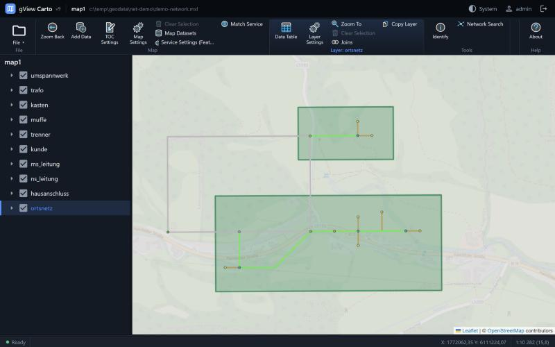
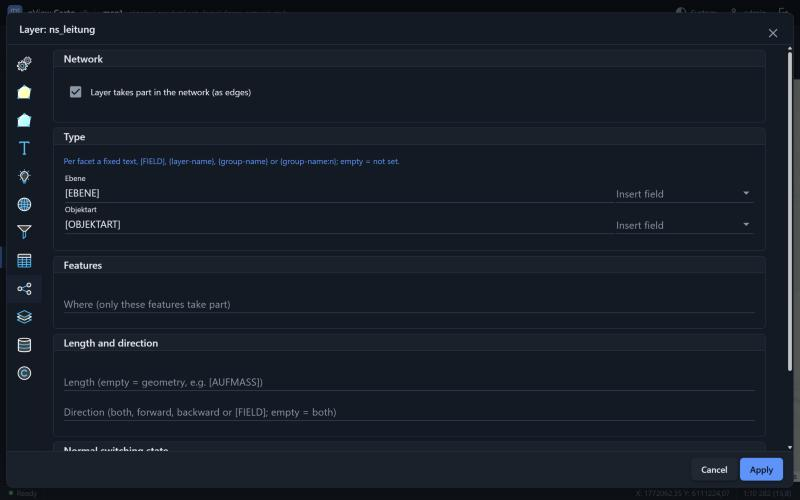
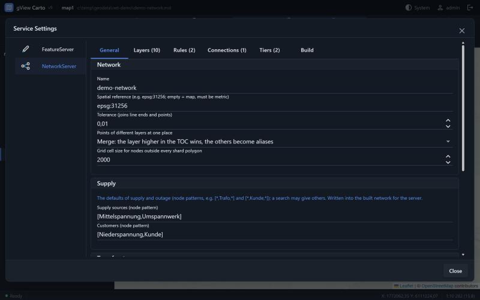
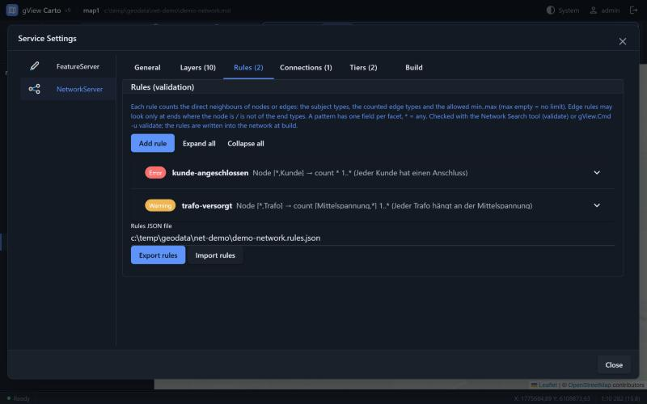
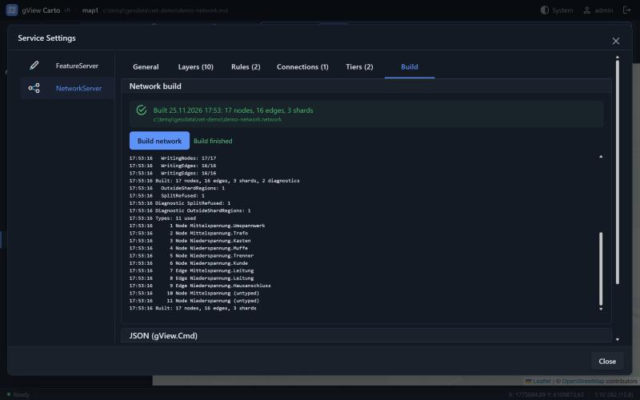
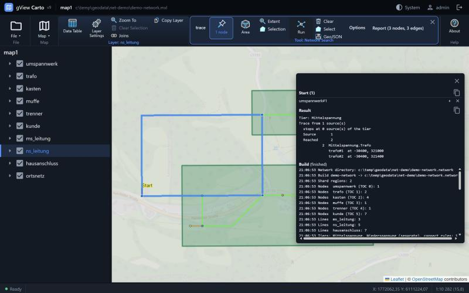

Building networks¶
From the point and line layers of a map, gView Carto builds a network: a graph of nodes and edges that the NetworkServer of the service searches (trace, shortest path, supply, outage, rules). This page shows the steps in Carto with a small sample network: a substation, three medium voltage cables, two transformers and behind them a low voltage network with boxes, a switch, house connections and customers. The configuration in detail is described in Access, build and configuration.

In the sample a low voltage joint lies on a vertex of a medium voltage cable, and a house connection ends on a low voltage cable (a T junction). Both are common in real data when the tiers are kept by different departments; step 3 shows how to deal with them.
1. Add layers to the network¶
For every layer that belongs to the network: context menu of the layer, Layer Settings, page Network.

Layer takes part in the network: point layers become nodes, line layers edges, a polygon layer may give the shards (e.g. local networks).
Type: one template per facet that makes the type of every feature: a fixed text, a field
[EBENE],{layer-name},{group-name}(the group of the layer) or{group-name:n}. The first facet is the tier, e.g. medium or low voltage: with one group per tier in the table of contents, use{group-name}there.Where, length, direction and the normal switching state (e.g. a field whose value blocks a switch) are optional.
Alternatively Service Settings, NetworkServer, tab Layers, Add all point and line layers adds all layers at once.
2. Basic settings¶
Service Settings (toolbar Map), NetworkServer on the left, tab General:

Spatial reference: the metric spatial reference the network is built in (empty: the map’s).
Tolerance: line ends and points closer than this become one node (default 0.01).
Points of different layers at one place: an error, or the layer higher in the table of contents wins and the others become aliases (e.g. a customer drawn on a box).
Supply: the default sources and customers of supply and outage, as type patterns, e.g.
[Mittelspannung,Umspannwerk].Type facets and Weights: the facets (tier, object type, …) and further weights beside the length.
3. Tiers and connections¶
Every value of the first facet is a tier. On the tab Tiers a tier gets its settings: rank, sources, sinks and blocked nodes. The sources of the low voltage are the transformers of the medium voltage.

The tab Connections decides what is connected and split at build:

Separate tiers: connect and split only within a tier. The low voltage joint on the medium voltage cable no longer splits it; low voltage cables connect to the transformers because they are sources of their tier.
Nodes on a line, Line ends on a line (T junctions): what applies when no rule matches. In the sample no node splits a line (Ignore), T junctions are reported (Report).
Rules: the first rule that matches wins. Here a low voltage switch may split a low voltage cable. Each rule is a panel with a header (check box = enabled, number, name, patterns, Where and Action); expanded it shows Name, Description (why the rule exists) and the patterns. The switch untyped of a row means the helper nodes (line ends without a point), e.g. for rules about T junctions; Text shows the pattern as text (
&and,!not). The arrows change the order, the filter field searches name, description and types.Action: Connect / split connects or splits, Ignore does not, Report does not and reports the place, Connect / split + report connects anyway and reports it (e.g. a line not broken up at a joint). The tool Network Search shows reported places with the operation problems, category Rules.
The fields of the patterns suggest the values of the facets. How the decision is made in detail is described in Connecting and splitting at build.
4. Rules¶
The tab Rules holds rules that find topology errors: a rule counts the direct neighbours of nodes or edges and compares the count with min and max, optionally within one tier. The header shows severity (Error, Warning), name, patterns and description; expand a rule to edit it. Export rules/Import rules exchange the rules as a JSON file.

Checks run with the tool Network Search (operation validate) or with gView.Cmd -u validate, never at build: a rule
with an unknown tier does not stop the build, the log warns, and validate fails until it is fixed.
5. Build¶
Tab Build, Build network. The map must be saved: the network is stored next to it ({map}.network). The log
shows the number of nodes, edges and shards, the notes (e.g. SplitRefused for the reported T junction,
OutsideShardRegions for features outside the shard polygons) and the types used. conflicts.json in the network
directory lists conflicts when the build stops. All reports of the build can be viewed in the map with the tool
Network Search, operation problems (see Network tools).

JSON (gView.Cmd) exports and imports the configuration, e.g. to build at night with gView.Cmd --command Network -u build.
6. Search¶
The tool Network Search (toolbar Tools) searches the built network: choose an operation (trace, reach, path, supply, outage, feeders, info, validate, problems), click the start in the map with Start, Run. Under Options, Tiers restricts the search to tiers; an Area limits it in space. All operations are described in Network tools.

The picture shows a trace from the substation on the medium voltage tier: it reaches both transformers, the low voltage joint stays out. When several nodes lie at the clicked place (separate tiers), the tier chooses the node; another click at the same place takes the next one.
7. Publish¶
When the map is published as a service, the network is available as the NetworkServer of the service as soon as it lies at the server’s location (build in the server administration, gView.Cmd, or copied). Access, location and the REST operations are described in Access, build and configuration.